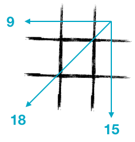

Constraints
Why does software development slow down over time? One of the many reasons is that the existing code places constraints on your ability to go forward. You must keep all prior features working while adding the next.
The interactive activity below demonstrates this phenomenon.
Your Goal
Fill the grid above with the numbers 1 through 9 such that:
- Every cell has a unique number
- The right side sums to
- The top sums to
- The diagonal from top-right to bottom-left sums to
Controls
To fill in the grid, type the desired numbers on your keyboard. You can also move the selection around using the enter or arrow keys.
Great job!
It took you [duration] to complete the first part of the exercise.
Your next task is to update your grid so that the right side sums to a specific number.
Lucky!
Your grid already had the correct sum, so there wasn't anything for you to do.
Wow!
You did that quickly; it only took you [duration]. Perhaps you are quick at math?
Good!
That took you [duration]. Why was it slower?
Next, you will be asked to update your grid so that the top row sums to a specific number, while also maintaining the right side sum.
Lucky!
Your grid already had the correct sums, so there wasn't anything for you to do.
Good!
You only took [duration] to complete the task. That's quick! Is this getting harder yet?
Complete
That took you [duration]. Why did it take so long? You've only been asked to arrange 9 numbers on a grid, after all...
For the final task, you need to get the top-right to bottom-left diagonal to sum to a specific value. Of course, you'll still need to maintain the top and right sums.
Activity Complete
Congratulations on finishing the activity. You completed this last task in [duration].
For the four tasks, these were your times:
- Task 1: [duration]
- Task 2: [duration]
- Task 3: [duration]
- Task 4: [duration]
What made the activity harder as you progressed? What was different about the last task compared to the first?
Why Constraints Slow You Down
Hopefully the activity above helps you intuit why adding constraints slows you down. At a superficial level, the work appears to be the same throughout: you are "only" putting nine numbers in a grid. But each successive constraint restricts the placement of the numbers on the grid, changing the nature of the work and the effort required as you progress.
When the only constraint is to place the nine unique numbers, the work is trivial. Place them in any order you like. One of the simplest methods is to just do them in sequential order. But as the other constraints enter the picture, you have to change your approach to placing the numbers. You may have to significantly rearrange the numbers on the grid to move them into positions that make the sums work out. Even the initial work of making sure you have all nine unique numbers becomes harder as you ask yourself, "Which number am I missing now that I've moved some?"
The same thing happens in software development. At a superficial level, the work all seems the same. Why are some things more difficult than others when it all appears to be "only" writing some code? The answer is that there are hidden constraints. Setting aside the inherent technology constraints, every feature you build also acts as a constraint. Adding new features needs to not break old features, and that leads to more mental effort and longer development times just as illustrated in our activity.
About
This page is based on an activity I experienced as part of a mob programming workshop which Woody Zuill presented. The participants drew a hash (the '#' symbol like a tic-tac-toe board) on paper then filled in the numbers. We worked in pairs, verifying that each other's numbers satisfied all the constraints. The entire room worked at the same time, and Woody timed how long it took for the pairs to finish.
 It is a simple exercise to repeat in a group if you have access to writing materials. You can use these example constraints as illustrated on the right:
- Each space must be filled with a unique number from 1 though 9
- The right side must sum to 15
- The top must sum to 9
- The diagonal must sum to 18
The facilitator should make sure to inquire why the successive rounds are taking longer, making sure to explain the concept at the end.